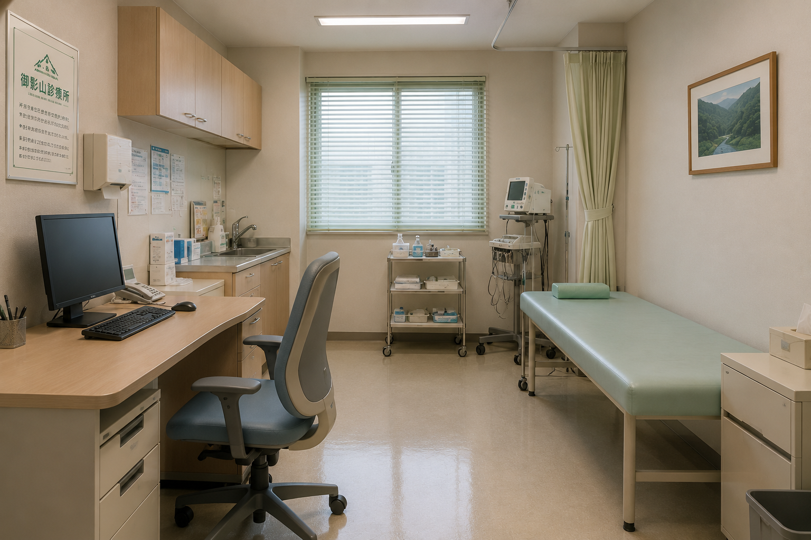
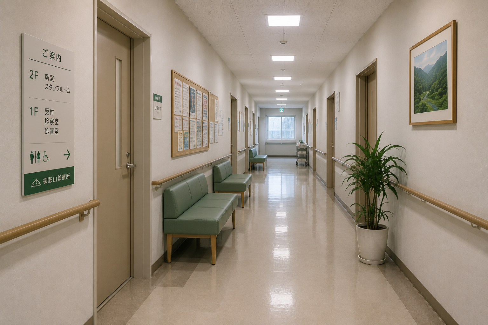
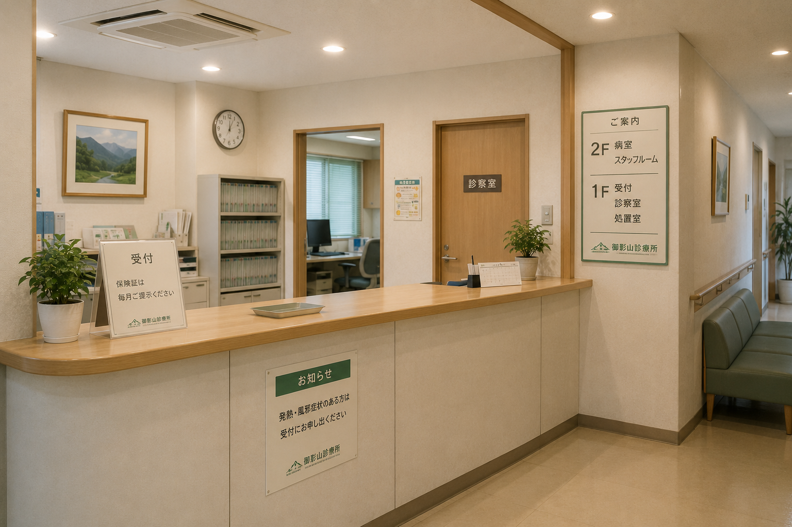

01
内科
発熱や生活習慣病など、幅広く診療します。
MEDICAL SERVICES
日々の不調から健康管理まで、地域の身近な窓口としてお応えします。

発熱や生活習慣病など、幅広く診療します。

けがや切り傷などの処置に対応します。

定期健診で毎日の健康を見守ります。
各種予防接種は事前にご相談ください。
ABOUT OUR CLINIC
山間地域に根差した診療所として、患者さま一人ひとりに寄り添う診療を行っています。
小さな変化にも気づける距離の近さを大切にし、皆さまが住み慣れた土地で健やかに暮らせるよう支えます。
施設について詳しく見るCLINICAL RECORD
地域の皆さまに安心してご相談いただけるよう、年度ごとの実績を公開しています。
| 年度 | 入院受入 | 退院者数 |
|---|---|---|
| 2023 | 4 | |
| 2024 | 3 | |
| 2025 | 5 |
退院者数の記録を確認する
DIRECTOR
院長 久世 直人
地域医療に30年以上携わり、患者さま一人ひとりと向き合う診療を続けています。
これからも、ここで暮らす皆さまの毎日に静かに寄り添い続けます。
彼らを地上へ戻すことはできません。
しかし、記録から消されたからといって、命まで消えたわけではありません。
私たちは、治療法が見つかる日までここで守り続けます。
記録はすべて残してあります。
どうか、そこで起きたことを確かめてください。
ACCESS
診療時間
| 時間 | 月〜金 | 土 | 日・祝 |
|---|---|---|---|
| 9:00–12:00 | ● | ● | — |
| 14:00–17:30 | ● | — | — |